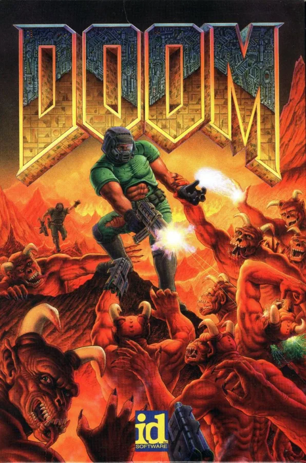
Batocera.linux
将旧电脑或支持的设备转成专用复古游戏平台。
当前显示第 1–24 条；使用筛选时会加载该分类的全部分页。

将旧电脑或支持的设备转成专用复古游戏平台。
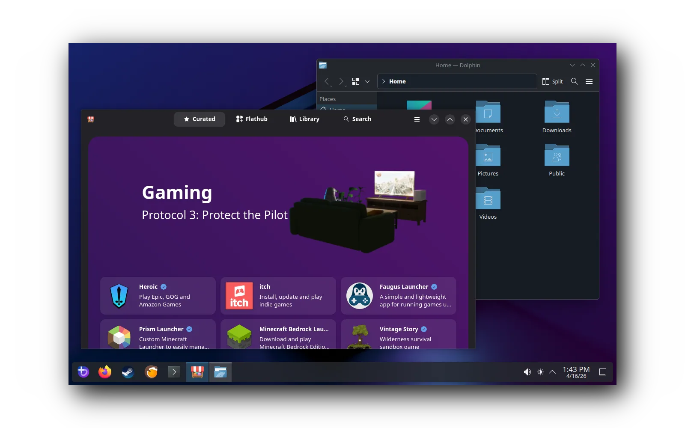
为仍有可用性能的 PC 或掌机提供可维护的游戏系统。
用轻量 RetroArch 系统复用旧 PC 与受支持单板机。
评估为指定 Anbernic 掌机更换社区固件的路线
研究让旧 PSP 系列设备继续运行社区软件的固件路线

把旧游戏电脑改造成客厅主机。
目标是让 ClockworkPi GameShell 脱离原厂停更系统，尝试启动 postmarketOS，作为 Linux 终端、测试机或专用控制设备。
研究特定旧 PS2 版本进入自制软件环境的历史入口
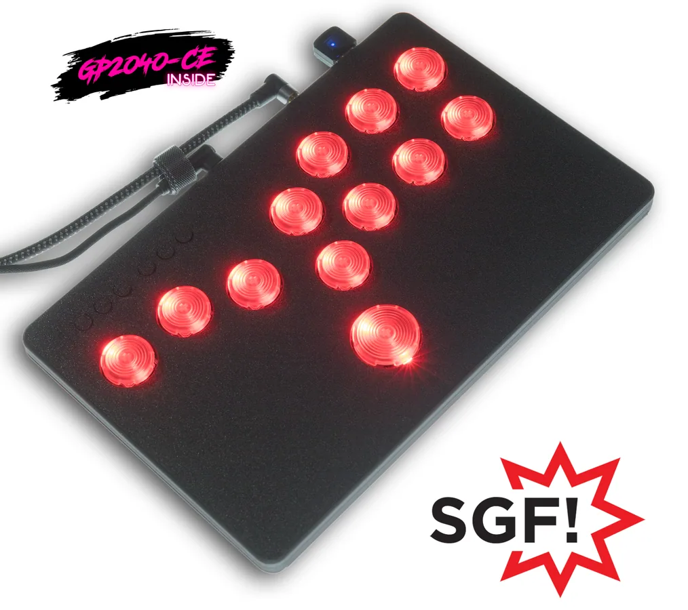
研究替换故障或过时手柄控制板、复用按键与摇杆的路线
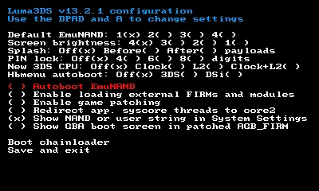
研究旧 3DS 系列主机的社区固件与维护路线
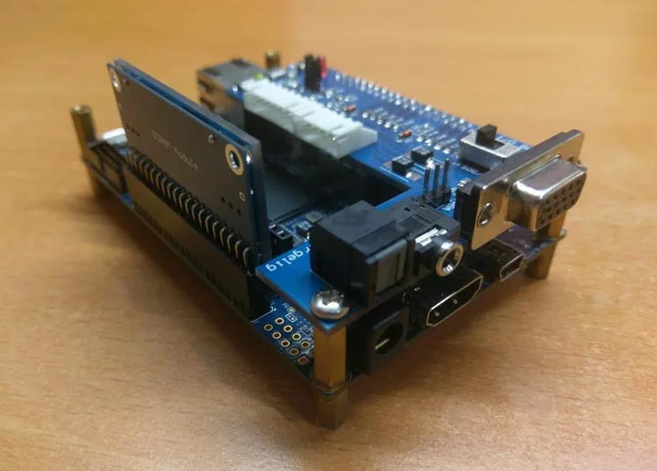
研究以 FPGA 平台重现旧游戏硬件环境的路线
把旧电脑或 Steam Link 作为游戏串流接收端。
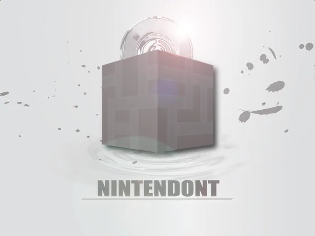
研究以旧 Wii 硬件承载 GameCube 软件的社区路线
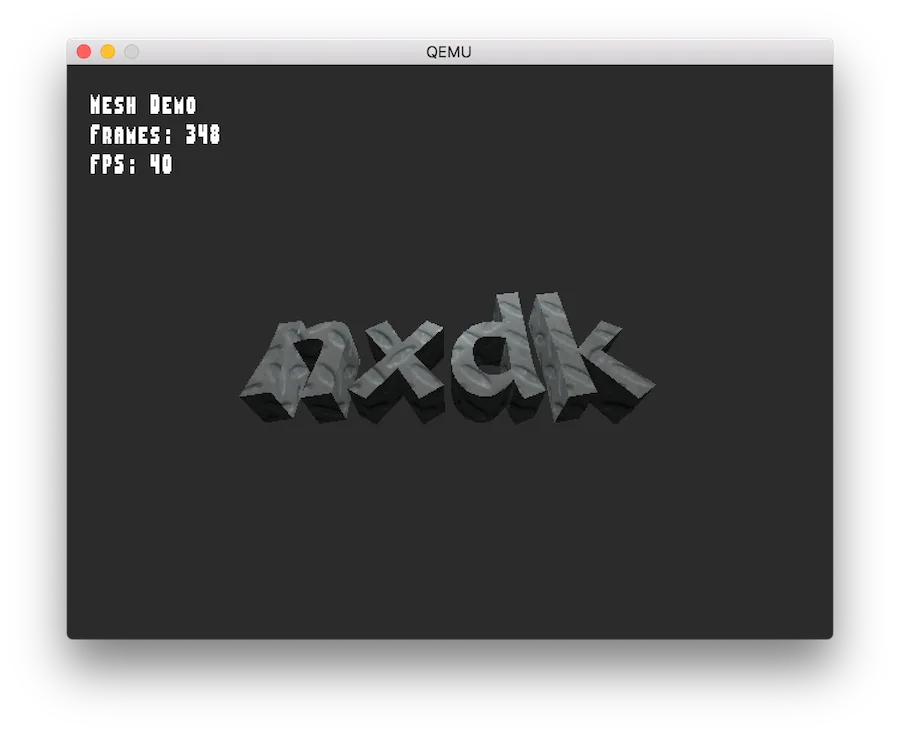
研究为旧 Xbox 编译新的社区应用和工具
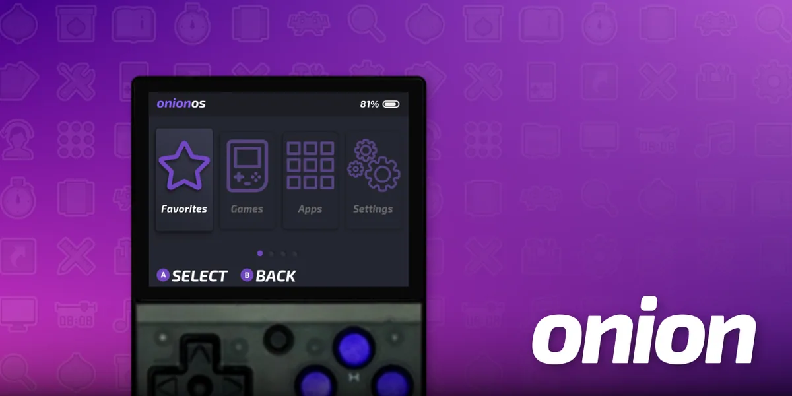
评估为既有掌机替换菜单、工具与系统组件的路线
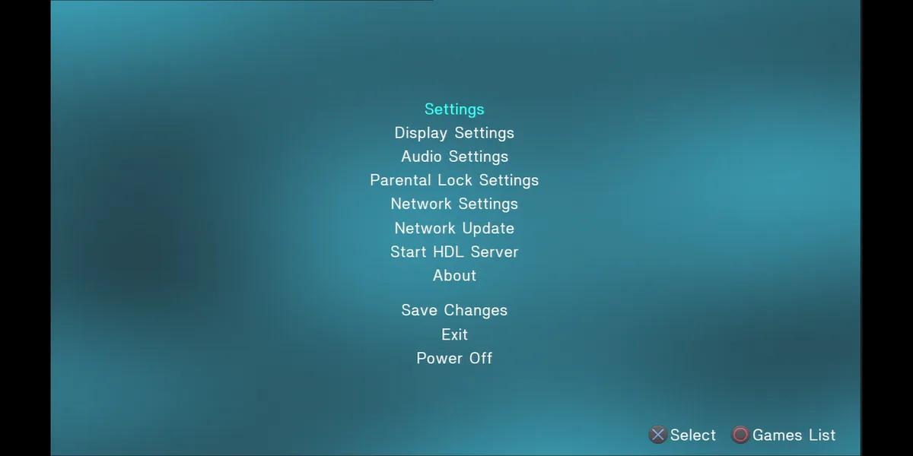
研究延续旧 PS2 主机本地应用与内容加载能力的路线
 备用图
备用图把旧单板机或电脑改造成复古游戏终端。

评估为现有开源掌机安装社区维护的游戏系统
让现有电脑向其他终端串流游戏。
备用图作者利用断线的原版 Xbox Duke 手柄外壳，计划塞入树莓派、电池、HDMI 与控制电路，连接电视玩复古游戏或串流。
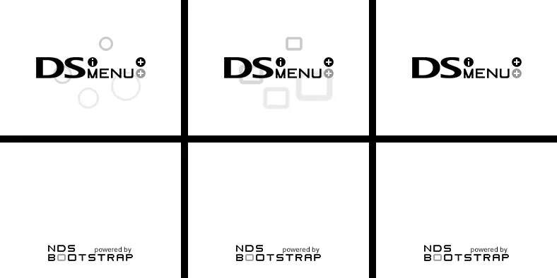
研究在旧任天堂掌机上组织并启动社区软件的界面路线
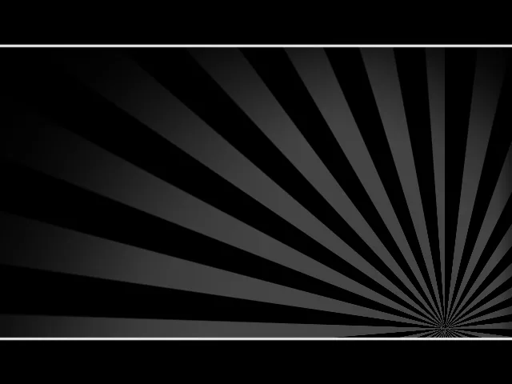
研究旧 Wii 系列设备的本地内容启动与前端维护路线
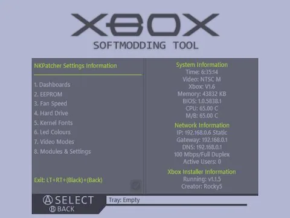
研究不更换主芯片时维护和扩展旧 Xbox 的社区路线
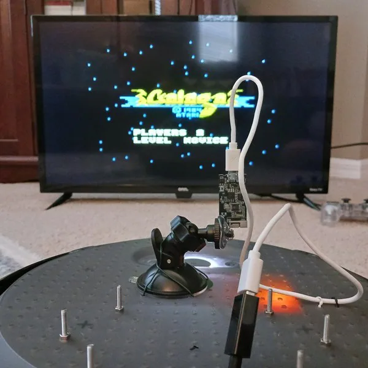
作者在迷你 Galaga 街机故障后拆除原电路，换入同尺寸 LCD，并用树莓派、Arduino 等重建游戏与控制。
减少一个筛选条件，或换一个设备/型号词。